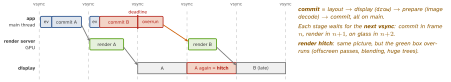
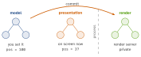

swiftui · folio
In one line: Your app never draws the screen: it edits a layer tree and commits it once per frame to the out-of-process render server, which renders it on the GPU for the next vsync. Every frame has a deadline — 16.67 ms at 60 Hz, 8.33 ms at 120 Hz (ProMotion). Miss it in your process → commit hitch; miss it in the render server → render hitch. Either way the old frame stays on screen.
Download PDF Print view LaTeX source


How it works
- Every
UIViewis backed by aCALayer(view.layer; the view is the layer’s delegate; swap the type withoverride class var layerClass). View = events, responder chain, Auto Layout; layer = contents, geometry, animation. - Three trees: the model tree (what you set — target values), the presentation tree (
layer.presentation(), in-flight values), the render tree (private, in the render server). Animations run in the render server — they keep going while your main thread is briefly busy. - CATransaction batches layer changes; the run loop opens an implicit one and commits it at the end of the turn. Explicit:
begin()/setDisableActions(true)/setAnimationDuration(_:)/setCompletionBlock/commit(). - Implicit animations: setting an animatable property on a standalone layer animates (default action, default timing). A view’s backing layer does not — UIView disables layer actions outside an animation block, so
view.layer.opacity = 0snaps. - Offscreen rendering = GPU renders into an extra buffer, then composites it back (buffer switch per pass). Triggers: shadow without
shadowPath(shape from alpha),mask,cornerRadius+masksToBoundsover content (plain background + radius is fine), group opacity (alpha<1 on a layer with sublayers),shouldRasterize. - Rasterization (
shouldRasterize = true) caches the subtree as a bitmap: wins only for static complex content; if it changes each frame it re-renders offscreen every time. SetrasterizationScaleto the screen scale (traitCollection.displayScale) or it blurs. - Images decode lazily, on first display, on the main thread (prepare phase). Memory = px width × px height × 4, not file size: 4000×3000 ≈ 48 MB even in a 100 pt cell. Fix: downsample with ImageIO, or iOS 15
preparingForDisplay()(sync, call off main) /prepareThumbnail(of:completionHandler:)(background) — assign on main.
Example — downsample off the main thread
// maxPx = max(w, h) in points * displayScale -> PIXELS
func downsample(_ url: URL, maxPx: CGFloat) -> UIImage? {
let noCache = [kCGImageSourceShouldCache: false] as CFDictionary
guard let src = CGImageSourceCreateWithURL(url as CFURL, noCache)
else { return nil }
let opts = [kCGImageSourceCreateThumbnailFromImageAlways: true,
kCGImageSourceShouldCacheImmediately: true,
kCGImageSourceCreateThumbnailWithTransform: true,
kCGImageSourceThumbnailMaxPixelSize: maxPx]
as CFDictionary
guard let cg = CGImageSourceCreateThumbnailAtIndex(src, 0, opts)
else { return nil } // decoded NOW, at thumbnail size only
return UIImage(cgImage: cg)
}One layer, three trees

Offscreen triggers → fix
| shadow, no path | layer.shadowPath = UIBezierPath(…).cgPath |
| radius + clip on an image | pre-round once when downsampling |
mask layer | bake into the image / avoid in cells |
alpha on a container | fade the leaves, or flatten |
| changing rasterized layer | turn shouldRasterize off |
Traps
- “I have 16 ms” — not on ProMotion: 8.33 ms at 120 Hz.
cellForRowfast but still hitching → the cost is in commit (decode,draw) or render (offscreen), not your code.cornerRadiusalone is not the problem — radius plus clipping content is.shouldRasterizeon animating content = worse, not better.- Downsample to points → blurry:
MaxPixelSizeis pixels (×displayScale). - Decode off main, but set
imageView.imageon main — UIKit is not thread-safe. - Overriding
draw(_:)allocates a backing store (w × h × scale2 × 4 B) and draws on the CPU; use layer properties.
Remember
“Set → commit → render → glass, one vsync each.” Main thread late = commit hitch; GPU late = render hitch. Images: pixels × 4, decode once, small, off main.